它怎样来到你的生活？
追溯获得它的关系、时刻与情境。
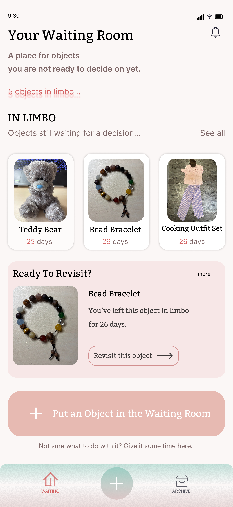
不是每一件留下来的物品都还有用，也不是每一次告别都不再有意义。
The Waiting Room 关注物品离开之前的那段不确定。通过访谈、可见修补、物品护照与展览，让人重新看见物品承载的关系，再决定它的未来。
点击阶段，进入对应的研究与设计。
被遗忘的并不只有物品，还有一个迟迟没有完成的决定。
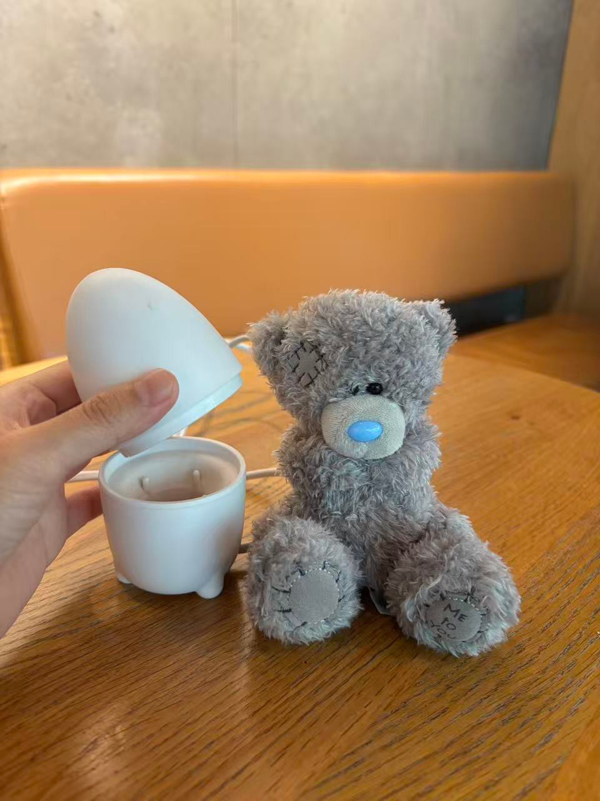
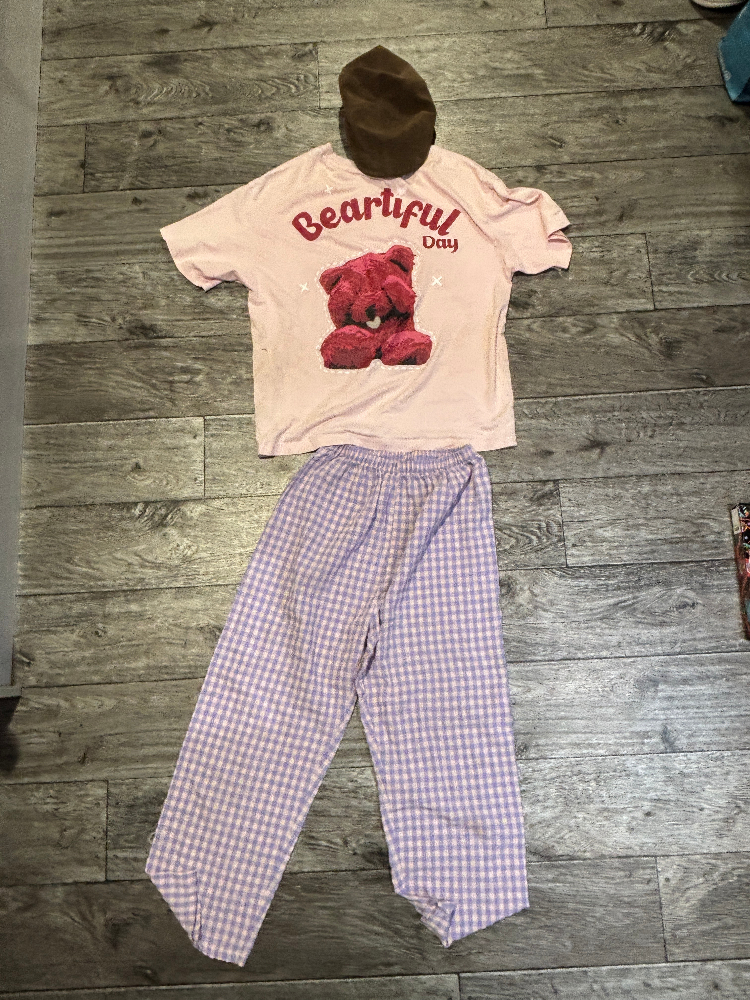
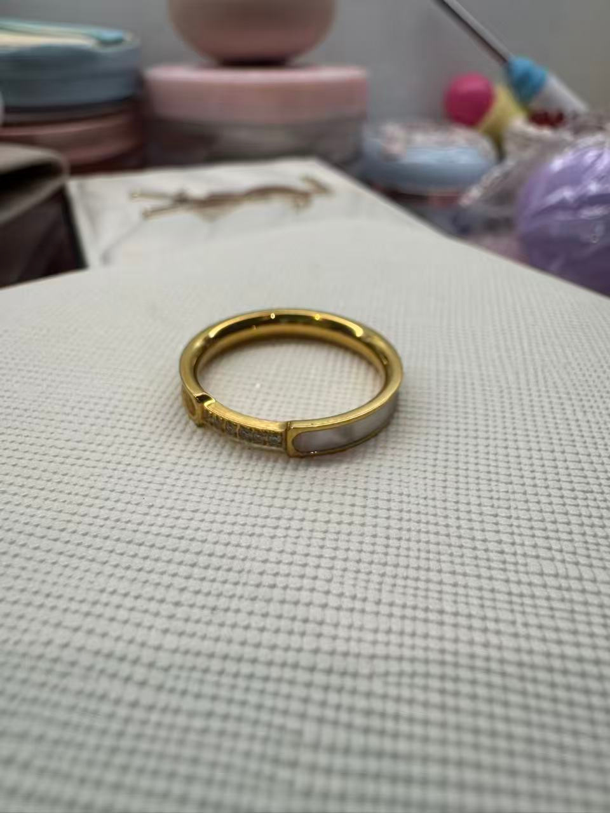
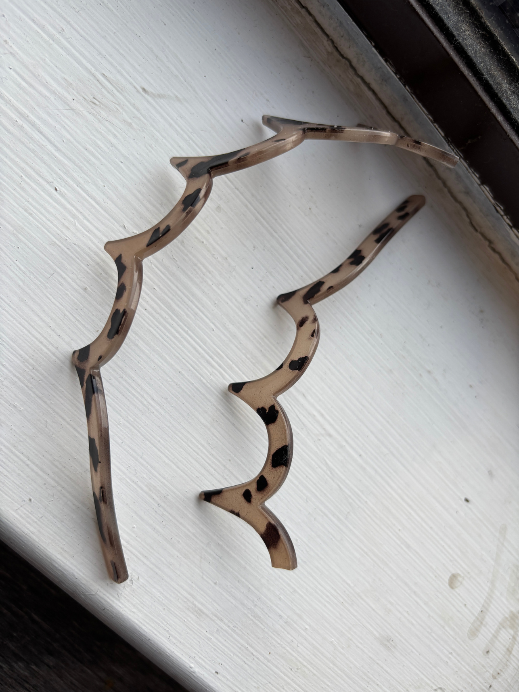
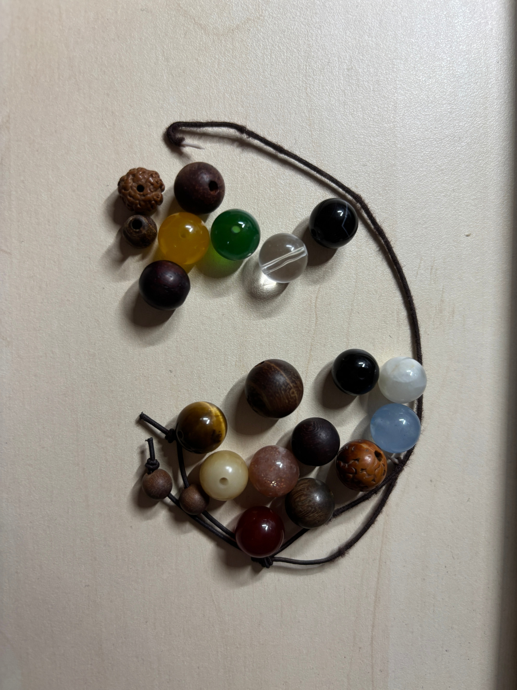
有的物品损坏了，有的不再实用，有的因为承载回忆而难以放下。收集到的物品来自准备与它们告别的人；在立即修理或丢弃之前，它们已经停留了数月，甚至数年。
在重新设计之前，访谈同时关注物品的损坏与人为何仍然保留它。
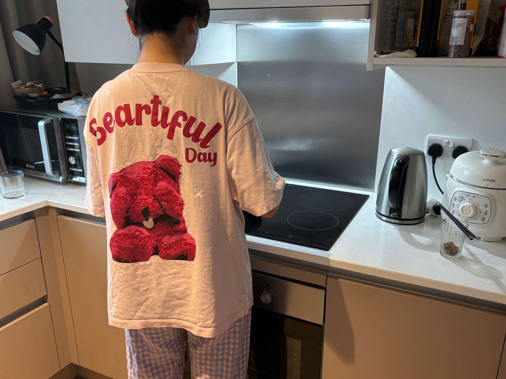
“These are the only clothes追溯获得它的关系、时刻与情境。
理解功能之外的习惯与陪伴。
看见损坏、搬家、实用性与空间限制。
让记忆、犹豫与未来期待被说出来。
物品可能失去实际用途，却继续承载一段关系、一次祈愿，或一年的生活。丢弃的决定因此被一次次推迟。
功能价值 ───────── 情感价值有限的空间、修复的成本、情感依恋与未来计划相互作用。单纯以完好或损坏分类，无法回应真正的犹豫。
不同因素交织，没有唯一的正确去向。如果物品已经在等待，什么样的空间可以支持人重新思考它的未来？
选择物品，查看访谈、介入过程和主人重新作出的决定。
帽子用来挡油烟，调节带夹在扎起的头发上，不压头也不挡视线。T 恤来自认识七年多的高中好友；虽然风格不再适合日常穿着，却舍不得扔。宽松的版型可以套在衣服外，隔开做饭的气味。便宜但舒服的紫色格纹裤，恰好与粉色上衣组成一套。从抵达后的第一顿饭起，它们就留在日常里。
“I’m taking it back to China. I’m going to treasure it.”
准备毕业回国，行李有限。这套陪伴了爱丁堡一年生活的衣服，似乎已经完成了任务。
用可见的缝补围绕污渍绣线，在帽子上加纽扣、在裤子上补缀。留下生活的痕迹，也让投入的时间与关心变得可见。
主人决定把它带回中国、珍藏起来。她看到的不只是修补，而是每一针背后的时间、关怀和思考。
↳ 设计没有擦去污渍，而是改变了人理解这些痕迹的方式。
这是男友在她难过的一天送来的礼物，小熊肚子里曾装着糖果。它不一定符合她自己的审美，也不是每天使用的物品，却一直安静地陪伴大学生活，让她想起那一天、那个人。比起直接丢掉，她希望它拥有有意义的下一段生命。
“Perhaps what has been repaired is the willingness to keep it.”
小熊没有损坏。毕业回国时，真正的问题是有限的行李空间，以及它是否还能进入下一段生活。
为小熊钩织一个绿色小背包，并赋予可随身携带的挂件形态。重新设计不追求“修好”，而是给陪伴找到一个轻便的入口。
主人喜欢这段“第二次旅程”，感受到细节里的用心，并愿意在展览结束后重新把它带回家。
↳ 物理状态完好，也可能停留在待决定的状态；情感与可携带性共同影响未来。
2023 年，相伴的人即将前往 UCL 学习，两人各自得到一条手链，寄托好运与感情的祝愿。她佩戴了约三年，旅行时放在包里或戴在腕上。对她而言，手链承载着祈愿、经历与关系，因此损坏不意味着意义消失。
“Some objects don’t need to look new. They just need the chance to continue.”
访谈前两周手链断开，一颗珠子遗失。主人仍保留着它，而不是立刻丢掉。
重新手工串联珠子，让它能够继续佩戴。修复不执着于完全重现原本的珠子组合，而是回应主人明确的保留意愿。
在改造之前，主人就表示“修好后一定想拿回来”；展览之后，她仍希望继续佩戴。
↳ 有时设计需要做的，只是为一份原本就存在的保留意愿创造条件。
物品护照记录的不只是材质、尺寸与编号，也是一段被延续的故事。
展览没有要求每个人作出同样的决定，而是邀请人们更认真地作出自己的决定。
个由参观者分享的故事
件物品回到主人身边
件仍然留在等待之中
个被预设的必选结果
这次小型展览的记录，也让更多人认出了自己生活中尚未决定去留的物品。
实体展览与数字空间共享同一条路径。点击阶段查看相应触点。
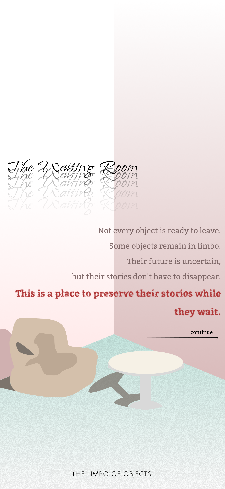
把展览中的暂停与关怀，
带进日常生活里的每一次犹豫。
用物品卡片、等待时间与温柔的重访提示，代替催促完成的任务列表。
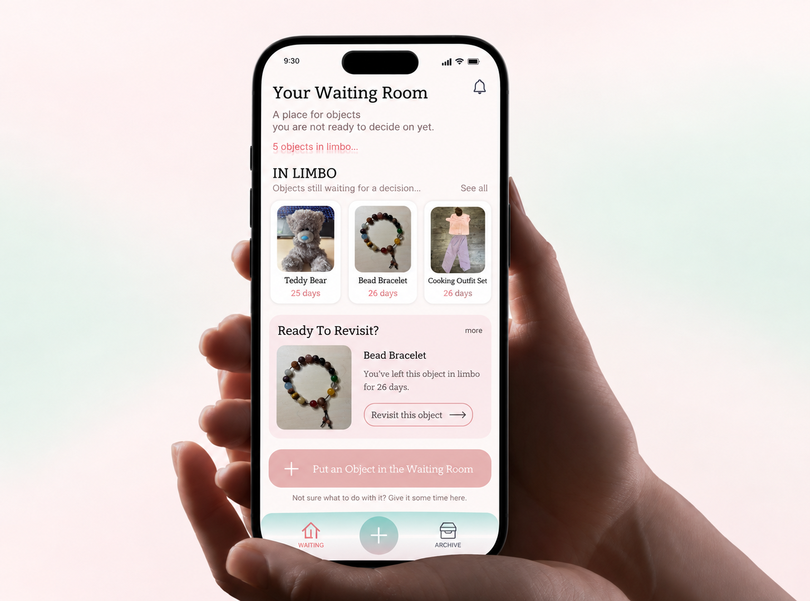
进入 → 记录 → 重访 → 归档。每一步都允许回到等待。
沿用项目中的柔和色彩，让停留不显得沉重；衬线标题为故事保留人的温度。
温柔的停顿。清晰的下一步。
Serif stories × Sans-serif guidance
向下滚动，界面进入中央手机时恢复色彩。
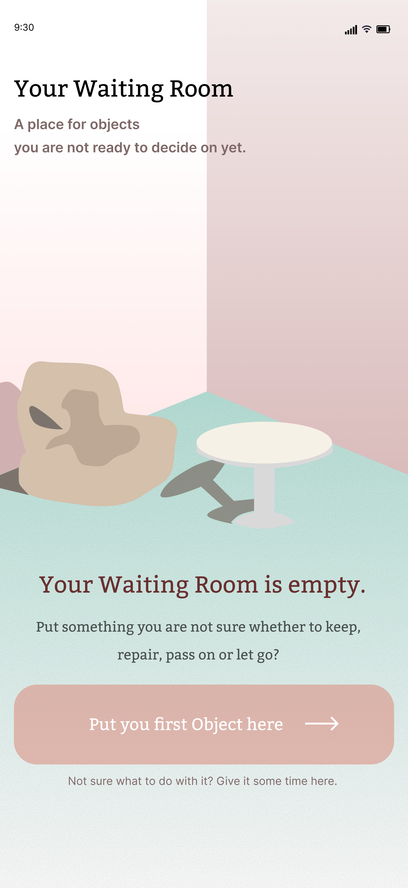
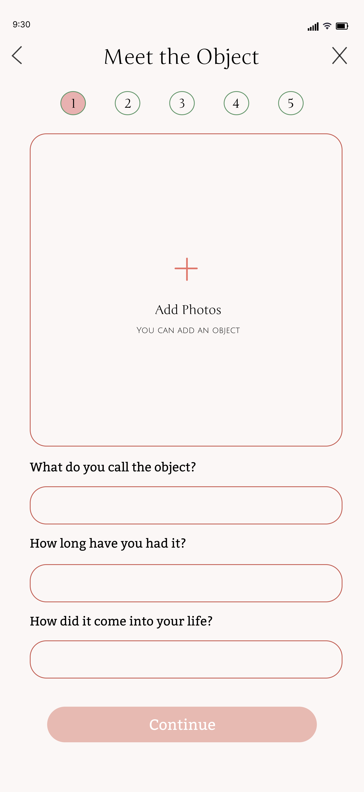
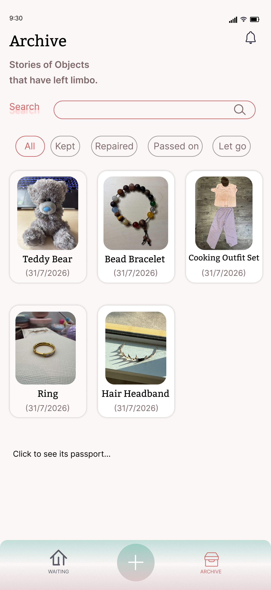
从第一次进入，到物品的新篇章。
空房间的插画把“没有数据”变成一份邀请。不需要先想清楚去留，只需要带来第一件物品。
从照片、名称、陪伴时间和进入生活的方式开始。让记录像一次关于物品的对话，而不只是冷冰冰的分类。
What do you call the object?
A little bear, a long story.How did it come into your life?
物品卡片显示等待时间；重访提示让用户重新靠近故事。时间是一段经历的记录，不是必须作出决定的倒计时。
保留、修复、转赠或告别，都可以成为故事的新章节。通过分类与搜索，再次找到物品护照。
自动播放五个界面；也可以选择章节，暂停细看。
试着添加物品、记录故事，再决定继续等待还是归档。记录仅保存在当前浏览器。
从一段故事开始。
让更多人想起那件还没准备好放手的物品。
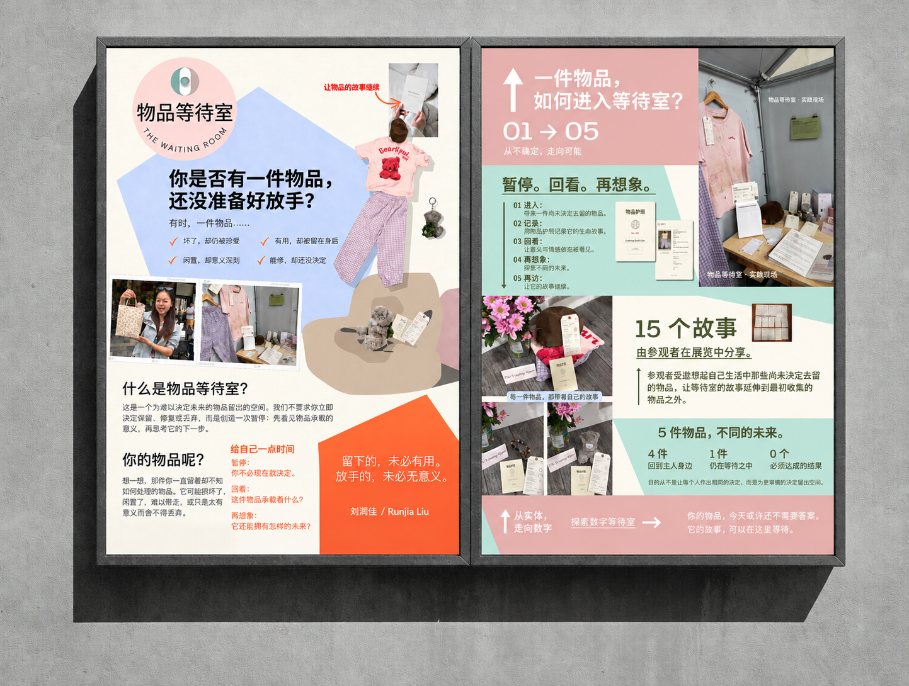
Some stories deserve
a little more time.